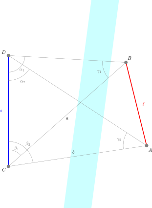

2 Landesvermessung
Die Landesvermessung basiert traditionellerweise im Wesentlichen auf der Anwendung von trigonometrischen Funktionen. Man spricht daher auch von Triangulation.
2.1 Anwendungsübung
Im Folgenden soll das anhand der Vermessung einer Strecke in unzugänglichem Gelände illustriert und angewendet werden.
Gegeben sei die folgende Ausgangslage (vgl. Abbildung 2.2):

Gesucht ist die Strecke \(\overline{AB}\) (\(\ell\)). Gemessen werden kann die Strecke \(\overline{CD}\) (\(s\)) sowie die Winkel \(\alpha_1\), \(\alpha_2\), \(\beta_1\) und \(\beta_2\). Dabei liegen \(\alpha_1\) und \(\alpha_2\) im Punkt \(D\), \(\beta_1\) und \(\beta_2\) im Punkt \(C\).
2.1.1 Arbeitsschritte
Die Idee ist, die Basisstrecke \(s = \overline{CD}\) über zwei Hilfsdreiecke mit der gesuchten Strecke zu verknüpfen. Aus dem Dreieck \(C\,D\,B\) erhält man die Strecke \(\overline{CB}\), aus dem Dreieck \(C\,D\,A\) die Strecke \(\overline{CA}\). Beide Strecken teilen sich den Punkt \(C\); der von ihnen eingeschlossene Winkel ist \(\beta_2 - \beta_1\). Damit lässt sich die Zielstrecke im Dreieck \(C\,A\,B\) über den Kosinussatz bestimmen.
Mit den gemessenen Grössen lassen sich der Reihe nach die folgenden fehlenden Grössen berechnen:
- \(\gamma_1 = 180^{\circ} - (\alpha_1 + \beta_1)\)
- Mit Hilfe des Sinussatzes (Strecke gegenüber \(\alpha_1\), d.h. \(\overline{CB}\)): \(a = \dfrac{s \cdot \sin \alpha_1}{\sin \gamma_1}\)
- \(\gamma_2 = 180^{\circ} - (\alpha_2 + \beta_2)\)
- Mit Hilfe des Sinussatzes (Strecke gegenüber \(\alpha_2\), d.h. \(\overline{CA}\)): \(b = \dfrac{s \cdot \sin \alpha_2}{\sin \gamma_2}\)
- Mit Hilfe des Kosinussatzes im Dreieck \(C\,A\,B\): \(\ell =\sqrt{a^2 + b^2 - 2ab \cos (\beta_2 - \beta_1)}\)
2.1.2 Berechnungen mit Hilfe von Python
Es ist deutlich einfacher, alle Messwerte einer Python-Funktion zu übergeben, als alle Schritte manuell mit Hilfe eines Taschenrechners einzeln zu berechnen. Dabei ist allerdings zu beachten, dass Python Winkelberechnungen in Bogenmass und nicht in Grad vornimmt.

Das Bogenmass \(\widehat{\varphi}\) eines Winkels ist das Verhältnis der Länge des vom Winkel \(\varphi\) ausgeschnittenen Kreisbogens zum Radius des Kreises. Es wird auch mit \(\operatorname{arc} \varphi\) bezeichnet.
\[\widehat{\varphi} = \frac{b}{r} = \operatorname{arc} \varphi = \frac{\pi}{180^\circ} \varphi \iff \varphi = \frac{180^\circ}{\pi} \widehat{\varphi}\]
Auf dem Einheitskreis (\(r=1\)) gilt: \(\widehat{\varphi} = b\). Die Einheit des Bogenmasses ist der Radiant (rad). Ein Winkel von 1 rad entspricht einem Kreisbogen, der dieselbe Länge wie der Radius hat.2
Glücklicherweise stellt Python im Modul math die Funktion math.radians() zur Verfügung, mit welcher Grad in Bogenmass umgerechnet werden können. Hierzu muss das Modul vorab mit import math importiert werden. Das Modul math stellt darüber hinaus auch alle erforderlichen trigonometrischen Funktionen (math.sin() und math.cos()) zur Verfügung.
Um die Python-Funktion so schlank wie möglich und gut lesbar zu halten, wird als erstes eine Hilfsfunktion implementiert, welche Grad in Bogenmass umrechnet. Weil es aber auch Kompasse mit einer Eichung in A‰ und Gon gibt, soll die Funktion alternativ auch Werte in diesen Einheiten umrechnen.
def angle_converter(angle: float, mil: bool = False, gon: bool = False) -> float:
"""Konvertiert einen Winkel in das Bogenmass (Radiant).
Unterstützt die Umrechnung von Altgrad (Standard), Artillerie-Promille
oder Gon. Es darf jeweils nur ein Modus aktiv sein.
Args:
angle (float): Der zu konvertierende Winkelwert.
mil (bool, optional): Wenn True, wird der Winkel als Artillerie-Promille
(A‰) interpretiert. Standard ist False.
gon (bool, optional): Wenn True, wird der Winkel als Gon (Neugrad)
interpretiert. Standard ist False.
Returns:
float: Der umgerechnete Winkel im Bogenmass.
Raises:
ValueError: Wenn sowohl 'mil' als auch 'gon' auf True gesetzt sind.
"""
if mil and gon:
raise ValueError(
"Es kann nur 'mil=True' (Artillerie) ODER 'gon=True' gewählt werden."
)
if mil:
return angle * (math.pi / 3200)
elif gon:
return angle * (math.pi / 200)
else:
return math.radians(angle)Wie die für die Berechnung erforderlichen Winkel gemessen werden, soll am Beispiel von \(\alpha_1\) in Abbildung 2.2 gezeigt werden. Dazu wird mit dem Kompass von der Position \(D\) aus der Azimut nach \(B\) und nach \(C\) gemessen. Die Differenz der beiden Messungen entspricht \(\alpha_1\).
Um diese Berechnung in einer Python-Funktion zu implementieren, muss sie als Algorithmus beschrieben werden. Dabei gilt es den Fall zu berücksichtigen, dass die beiden Messungen die Nordrichtung einschliessen. Um auch diese Situation abzudecken, bedient man sich der modularen Subtraktion.
Implementiert in einer Python-Funktion sieht das folgendermassen aus:
def angle_diff(angle1: float, angle2: float) -> float:
"""Berechnet die modulare Differenz (angle1 - angle2) modulo 360 Grad.
Berücksichtigt automatisch den Nord-Übergang, indem negative Differenzen
in den positiven Kreislauf [0, 360) überführt werden.
Args:
angle1 (float): Der Ausgangswinkel (z. B. erste Peilung).
angle2 (float): Der abzuziehende Winkel (z. B. zweite Peilung).
Returns:
float: Die modulare Winkeldifferenz im Bereich von 0 bis <360 Grad.
"""
return (angle1 - angle2) % 360Nun braucht es noch eine Hilfsfunktion für den Sinussatz.
def sine_rule(length: float, opposite_angle: float, ref_angle: float) -> float:
"""Berechnet eine Dreieckseite mit Hilfe des Sinussatzes.
Bestimmt die Seite, die dem Winkel ``opposite_angle`` gegenüberliegt,
ausgehend von einer bekannten Seite ``length`` und deren gegenüber-
liegendem Winkel ``ref_angle``:
gesuchte Seite = length * sin(opposite_angle) / sin(ref_angle)
Alle Winkel müssen im Bogenmass (Radiant) übergeben werden.
Args:
length (float): Bekannte Seite (hier die Basisstrecke s).
opposite_angle (float): Winkel gegenüber der gesuchten Seite
(im Bogenmass).
ref_angle (float): Winkel gegenüber der bekannten Seite ``length``
(im Bogenmass).
Returns:
float: Die Länge der gesuchten Seite.
"""
return (length * math.sin(opposite_angle)) / math.sin(ref_angle)Damit liegend die erforderlichen Hilfsfunktionen vor und die eigentliche Berechnung entlang der Formel \(\ell =\sqrt{a^2 + b^2 - 2ab \cos (\beta_2 - \beta_1)}\) kann als Python-Funktion implementiert werden.
def triangulation(s: float,
alpha1_a: float, alpha1_b: float,
alpha2_a: float, alpha2_b: float,
beta1_a: float, beta1_b: float,
beta2_a: float, beta2_b: float,
mil: bool = False,
gon: bool = False) -> float:
"""Berechnet eine unzugängliche Strecke mittels Triangulation aus Kompasspeilungen.
Bestimmt die Länge der unbekannten Zielstrecke AB (l) aus einer bekannten
Basislänge CD (s) und den zugehörigen Azimut-Peilungen. Aus je zwei
Peilungen wird über die modulare Differenz ein innerer Dreieckswinkel
gebildet. Über den Sinussatz werden daraus die Strecken von C nach B bzw.
von C nach A bestimmt; der Kosinussatz im Dreieck C-A-B liefert schliesslich
die Zielstrecke, wobei der von beiden Strecken in C eingeschlossene Winkel
der Differenz beta2 - beta1 entspricht.
Alle vier Teilwinkel werden aus je zwei Kompasspeilungen (a und b)
rekonstruiert.
Args:
s (float): Die gemessene, zugängliche Basisstrecke (CD).
alpha1_a (float): Erste Kompasspeilung für den Teilwinkel Alpha 1 (bei D).
alpha1_b (float): Zweite Kompasspeilung für den Teilwinkel Alpha 1 (bei D).
alpha2_a (float): Erste Kompasspeilung für den Teilwinkel Alpha 2 (bei D).
alpha2_b (float): Zweite Kompasspeilung für den Teilwinkel Alpha 2 (bei D).
beta1_a (float): Erste Kompasspeilung für den Teilwinkel Beta 1 (bei C).
beta1_b (float): Zweite Kompasspeilung für den Teilwinkel Beta 1 (bei C).
beta2_a (float): Erste Kompasspeilung für den Teilwinkel Beta 2 (bei C).
beta2_b (float): Zweite Kompasspeilung für den Teilwinkel Beta 2 (bei C).
mil (bool, optional): Wenn True, werden alle Peilungswerte als
Artillerie-Promille (A‰) interpretiert. Standard ist False.
gon (bool, optional): Wenn True, werden alle Peilungswerte als
Gon (Neugrad) interpretiert. Standard ist False.
Returns:
float: Die berechnete Länge der unzugänglichen Zielstrecke (l).
Raises:
ValueError: Wenn über die Hilfsfunktionen sowohl 'mil' als auch 'gon'
auf True gesetzt sind.
"""
# Aus je zwei Peilungen den inneren Teilwinkel als modulare Differenz bilden.
input_angles = [alpha1_a, alpha1_b, alpha2_a, alpha2_b,
beta1_a, beta1_b, beta2_a, beta2_b]
angles = []
for i in range(0, len(input_angles), 2):
diff = angle_diff(input_angles[i], input_angles[i + 1])
angles.append(diff)
# In Bogenmass umrechnen.
alpha1, alpha2, beta1, beta2 = (
angle_converter(angle, mil, gon) for angle in angles
)
# Hilfsdreiecke an der Basis s: gamma liegt jeweils gegenüber s.
gamma1 = math.radians(180) - (alpha1 + beta1)
gamma2 = math.radians(180) - (alpha2 + beta2)
# Sinussatz liefert die Strecke gegenüber alpha (von C aus): CB bzw. CA.
strecke_cb = sine_rule(s, alpha1, gamma1)
strecke_ca = sine_rule(s, alpha2, gamma2)
# Kosinussatz im Dreieck C-A-B; eingeschlossener Winkel in C ist beta2 - beta1.
l = math.sqrt(
strecke_cb**2 + strecke_ca**2
- 2 * strecke_cb * strecke_ca * math.cos(beta2 - beta1)
)
return lErnst-Erich Doberkat und Michael Jung, Ebene Trigonometrie & Analytische Geometrie: Grundlagen und Anwendungen für Geodäsie, Karographie und verwandte Disziplinen (Springer Berlin Heidelberg, 2024), 56, zugegriffen 4. Juni 2026, https://doi.org/10.1007/978-3-662-68843-4_1.↩︎
Werner Durandi u. a., Formeln, Tabellen, Begriffe: Mathematik - Physik - Chemie, 8., aktualisierte Auflage, hg. von Verein Schweizerischer Mathematik- und Physiklehrkräfte und Werner Durandi (Orell Füssli Verlag, 2022), 91.↩︎
Sebastian Iwanowski und Rainer Lang, Diskrete Mathematik mit Grundlagen: Lehrbuch für Studierende von MINT-Fächern (Springer Fachmedien Wiesbaden, 2021), 166, zugegriffen 24. Mai 2026, https://doi.org/10.1007/978-3-658-32760-6.↩︎